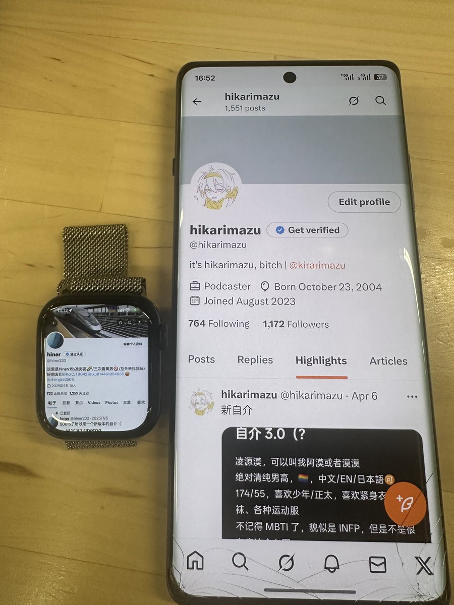

mortis
@0Yowlry
@hiner233 @hikarimazu 🥰🥰🥰

hiner
@hiner233
#hiner旅行
今天在长沙～
谢谢@hikarimazu 早上五点多就到火车站接我，陪了我一整天。hikari真的很可爱，聊得很开心w
长沙也是一个超级大城市了，气温说实话的确有些热（x），不过商圈之类的很多，逛的人也很多，很热闹的感觉。下次来的话会选更凉快的季节，去江边和其他地方走一走❤️ https://t.co/1dizcQR8Fe